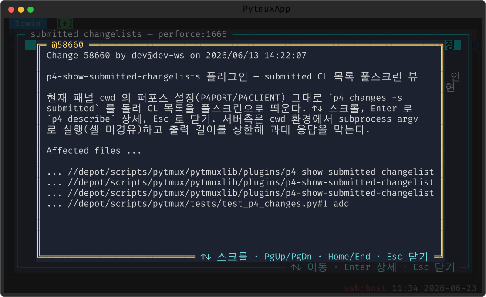

p4-show-submitted-changelists
현재 Perforce 서버의 submitted changelist 목록을 풀스크린으로 띄우고, 항목에서 Enter 를 치면 p4 describe 상세(설명·변경 파일)를 보여줍니다.
여는 법
| 명령 | 설명 |
|---|---|
p4changes | submitted CL 목록 (p4changes [N], 기본 50; 별칭 submitted) |
↑↓ 스크롤 · Enter 상세 · Esc 닫기.


메모
활성 패널의 작업 디렉토리 기준으로 p4 를 호출하므로, 그 디렉토리의 P4 설정(P4CONFIG 등)을 그대로 따릅니다.
끄기 · 제거
:plugins 관리 팝업에서 끄거나(가역), pytmuxlib/plugins/p4-show-submitted-changelists/
디렉토리를 지우면(delete-to-disable) 명령·자동완성·메뉴 어디에도 나타나지 않고 조용히
사라집니다. 코어는 영향받지 않습니다. ← 플러그인 개요